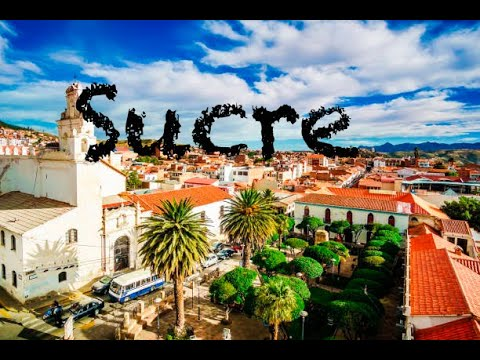

Sucre es la capital constitucional de Bolivia y una de las ciudades más hermosas e históricas del país. Está ubicada en el departamento de Chuquisaca, en un valle rodeado de montañas, lo que le da un clima agradable durante gran parte del año.
Conocida como la "Ciudad Blanca" por el color de sus fachadas coloniales, Sucre conserva un encanto histórico único: sus calles empedradas, iglesias antiguas, plazas y edificios de arquitectura colonial española la convirtieron en Patrimonio de la Humanidad por la UNESCO. La Plaza 25 de Mayo es el corazón de la ciudad, rodeada de construcciones emblemáticas como la Catedral y el Palacio de Gobierno.
Sucre tiene además un gran valor histórico para Bolivia, ya que allí se firmó el Acta de Independencia del país, por lo que también se la conoce como la "Cuna de la Libertad". Es una ciudad universitaria y estudiantil, con ambiente tranquilo, gente amable y una vida cultural activa, llena de museos, cafés, mercados tradicionales y celebraciones populares.
